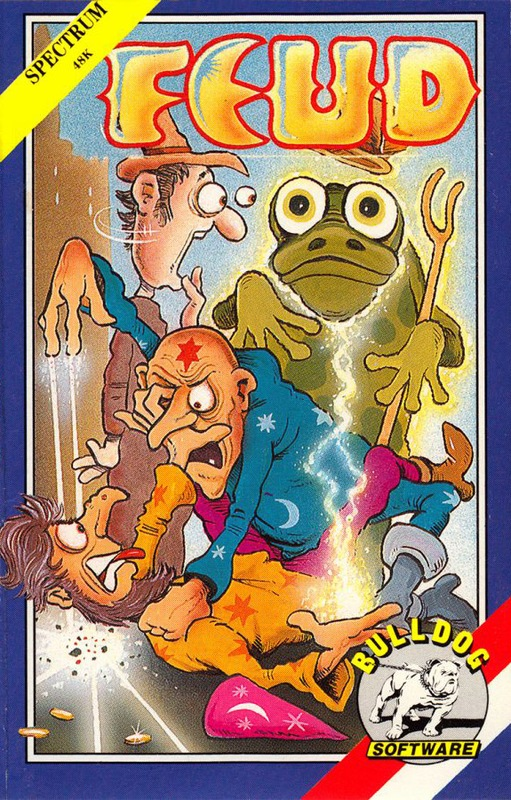
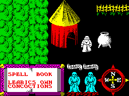
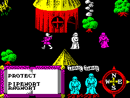
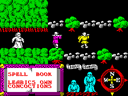

Feud


{kind=link}

| Publisher: | Bulldog Software |
| Price: | £1.99 |
| Year: | 1987 |
| Source: | CRASH, Issue 38 |

Bulldog is a new label just set up by Mastertronic, and like its parent company, it will specialise in budget games — all its releases are to be priced at £1.99. Feud is the launch game and the player is taken into the world of magic, engaging another wizard in one-to-one combat.
The story begins in a far away land. Two wizard brothers, Learic and Leanoric, start an argument — the quarrel escalates, and the kinsmen begin a feud in which they fight with spells. The player takes control of Learic and the computer assumes the role of his brother. Both brothers are well versed in the arts of necromancy, and set out to demonstrate their skills on each other.

his trusty cauldron. Let the FEUDing
begin!
Learic and Leanoric concoct their spells by travelling round the flip-screen landscape, collecting rare herbs and roots from the countryside. Herbs are collected by walking over them, and when the appropriate ingredients have been gathered, the wizard needs to return to his cauldron and start a brew to actually make the spell. When the ingredients are mixed, the charm is added to the wizard’s armoury.
Each of the dozen spell potions require two herbal ingredients, and the recipes are contained in a leather-bound book. Pages from this magical manual are displayed In a window at the bottom of the main screen: pressing FIRE and the direction keys turns the pages of the tome. A spell cannot be cast until the specified herbs have been picked up, taken to the cauldron that rests outside Learic’s hut and brewed into a spell.

opponent — the wiz in purple — but he
hasn’t collected the ingredients for the
protect spell yet. His status statue takes
a pounding...
The effects of spells range from making Learic invisible, to creating zombies, shooting lightning bolts and teleporting around the countryside. Some last for only one blast, whereas others (the teleport spell for instance) endure for some time. When the power of a spell potion is exhausted, the colours of the spell’s Ingredients on the recipe page return to black. Most spells don’t require special expertise to cast, but some of the more important and dangerous ones (such as the Fireball spell) need to be practised before they work perfectly.
Your opponent, Leanoric, is not idle while you quest for ingredients — he stomps around the leafy glades collecting herbs and roots and concocts his own spells. A compass below the playing area shows Leanoric’s position. If for instance, he is advancing on you from the south, the south point of the compass lights up. Leanoric freezes for a split second when he joins your wizard on a screen — an ideal moment to zap him with a spell.
Statues in the status area represent the two magicians, and when a wizard casts a spell successfully the victim’s statue slides a little deeper into the ground. The magician whose statue disappears first has lost the feud, owing to a terminal lack of energy.
CRITICISM

couple of peasants. With the right
spell, you can turn them into Leanoric-
bashing zombies
“If all of the Bulldog games are going to be up to this standard, then The Best Of British label can look forward to a prosperous future. Just as I was getting bored with all the budget arcade adventures that have been coming out lately, Feud comes into the office and changes my mind completely. The graphics are, without doubt, this program’s most astounding feature. They are extremely colourful, large, and very detailed. All this without a hint of colour clash. Mastertronic have launched their label in the best possible way — fabulous!”
PAUL
“Feud is really good! The graphics are pleasing; things like the river and the gardens could have been made more realistic, but the effect is still there. The gameplay is packed, and the fun doesn’t end once you’ve found the spells! The fact that your brother constantly follows you around keeps everything moving at a frantic pace; when you think you’ve got him on the run, he heals himself — Aargh! For £1.99, Feud is excellent value for money. Can we expect more like this from the Bulldog label? I hope so...”
MIKE
“What a way to kick off a new label! Feud is completely brilliant. I love original games, so it is a real pleasure to see a cheapie that’s as ‘new’ in concept as this — and as playable. I haven’t been able to force myself to play anything else today. The graphics are very good. The screens flip annoyingly, but the detail of the backgrounds and the superb animation of the characters make up for this. There is no music on the title screen, but the effects are fairly good. Your life won’t be complete without Feud, especially at the price.”
BEN
COMMENTS
| Control keys: | Q up, A down, O left, P right, SPACE fire |
| Joystick: | Kempston, Cursor, Interface 2 |
| Use of colour: | Very pretty with little clash |
| Graphics: | Large, well-animated figures, and attractive settings |
| Sound: | No title tune, but good spot effects |
| Skill levels: | One |
| Screens: | 120 |
| General rating: | An excellent start to a new label, which proves that budget arcade adventures are alive and well! |
| Use of computer: | 79% |
| Graphics: | 90% |
| Playability: | 91% |
| Addictive qualities: | 90% |
| Value for money: | 96% |
| Overall: | 91% |